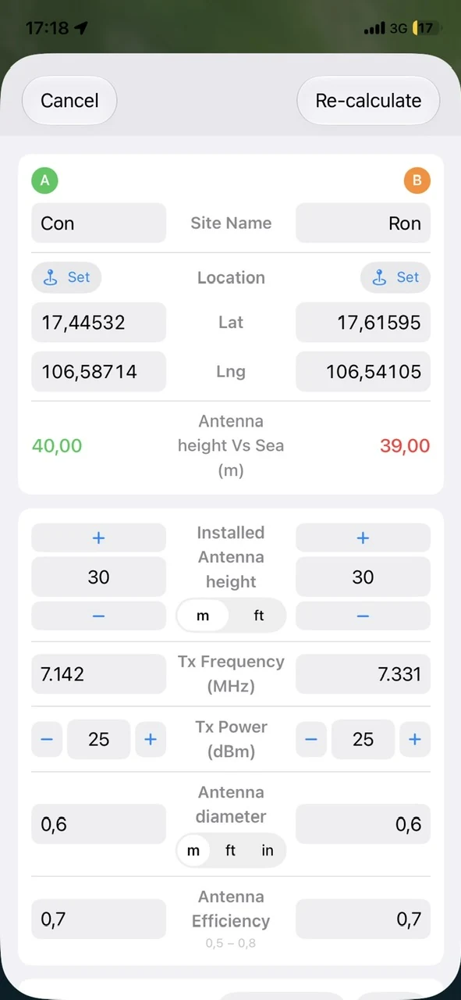
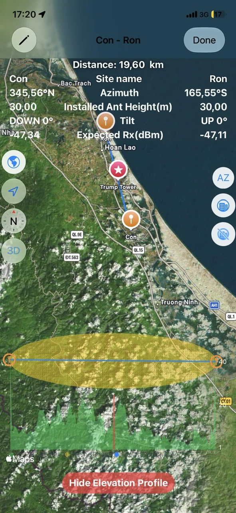
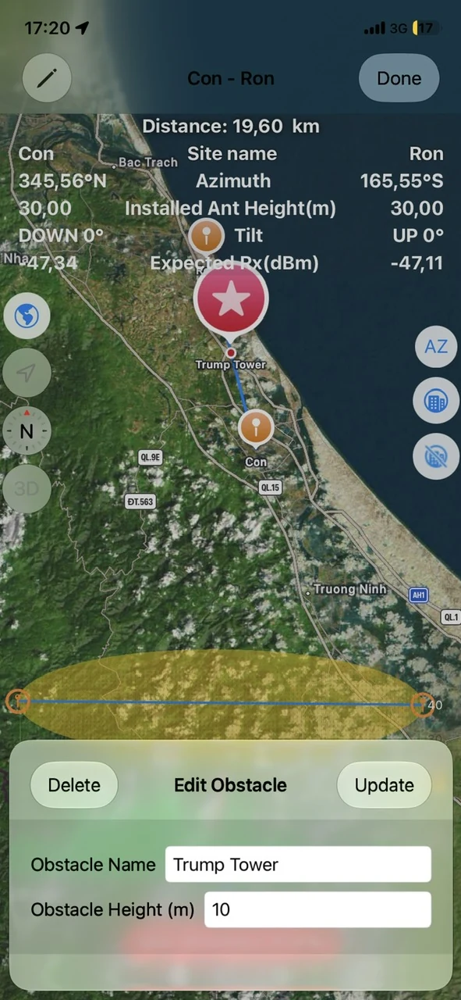
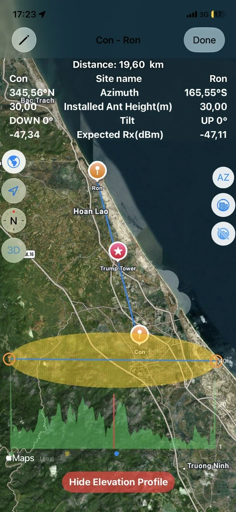
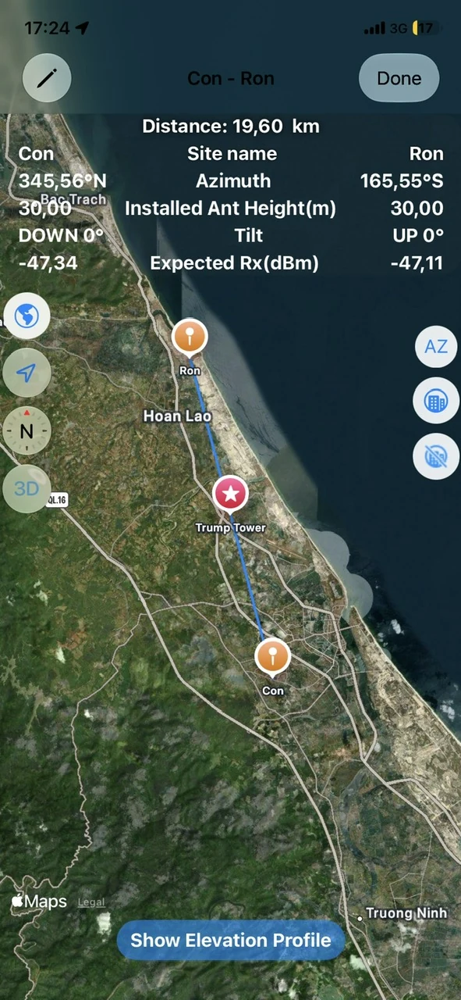
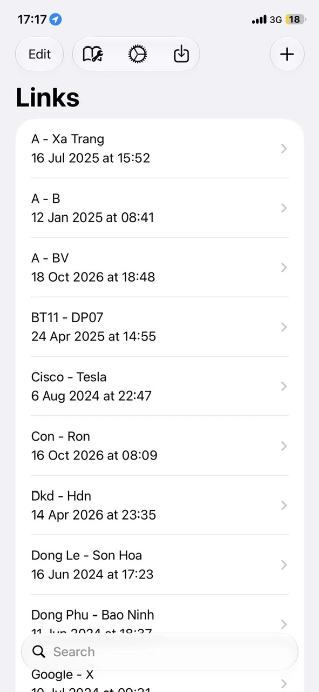
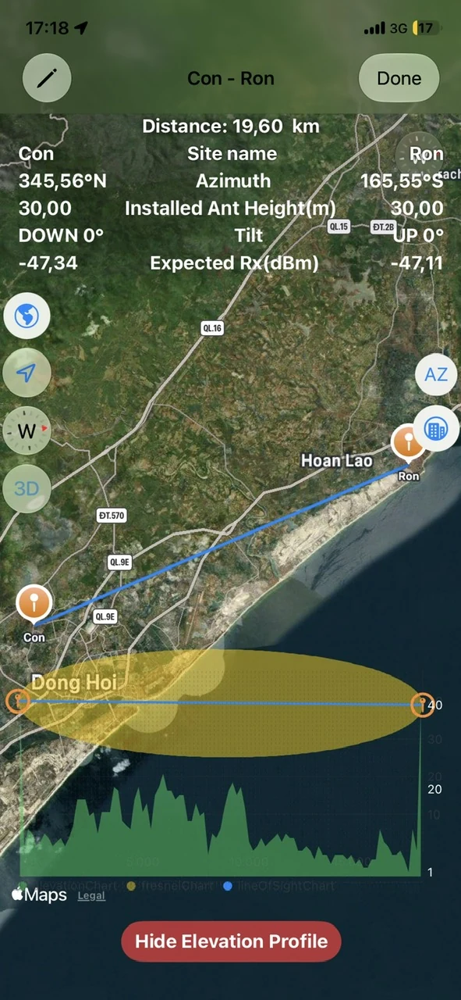

01 / GEOMETRY
⌖
Distance, azimuth & elevation
Calculate the distance and bearing between two sites, plus site and link elevation information from their GPS coordinates.
SITE-TO-SITE CALCULATIONSA practical field companion for microwave link planning, antenna alignment and radio-link calculations — right from your phone.
Bring essential microwave planning calculations together in one mobile workflow.
Calculate the distance and bearing between two sites, plus site and link elevation information from their GPS coordinates.
SITE-TO-SITE CALCULATIONSInspect the elevation profile, add obstacles and assess Fresnel Zone clearance when planning antenna positions.
Estimate antenna down-tilt or up-tilt from site and antenna heights. Use the map and compass tools to help align the link.
Estimate antenna gain and expected received power under free-space conditions using frequency, antenna diameter and efficiency.
Visualize both sites and the link direction on an integrated map to identify nearby landmarks and practical alignment references.
Keep link configurations available for later review and adjustment. iOS supports iCloud sync for saved configurations.
Explore actual iPhone screenshots from the App Store listing. Swipe or use the arrows to browse.







Screenshots from the iOS App Store listing. The Android interface may differ.
Move from coordinates to useful field information in a few steps.
Enter GPS coordinates or select locations using the integrated map.
Check distance, azimuth, elevation and Fresnel clearance along the route.
Adjust antenna heights and radio parameters to estimate tilt, gain and received power.
Designed for engineers working with microwave transmission systems such as NEC Pasolink, SIAE, Ceragon, Ericsson MINI-LINK and Huawei.
The app provides planning calculations; it does not configure or manage vendor radio equipment.Download Microwave Link Calculator for iOS or Android.